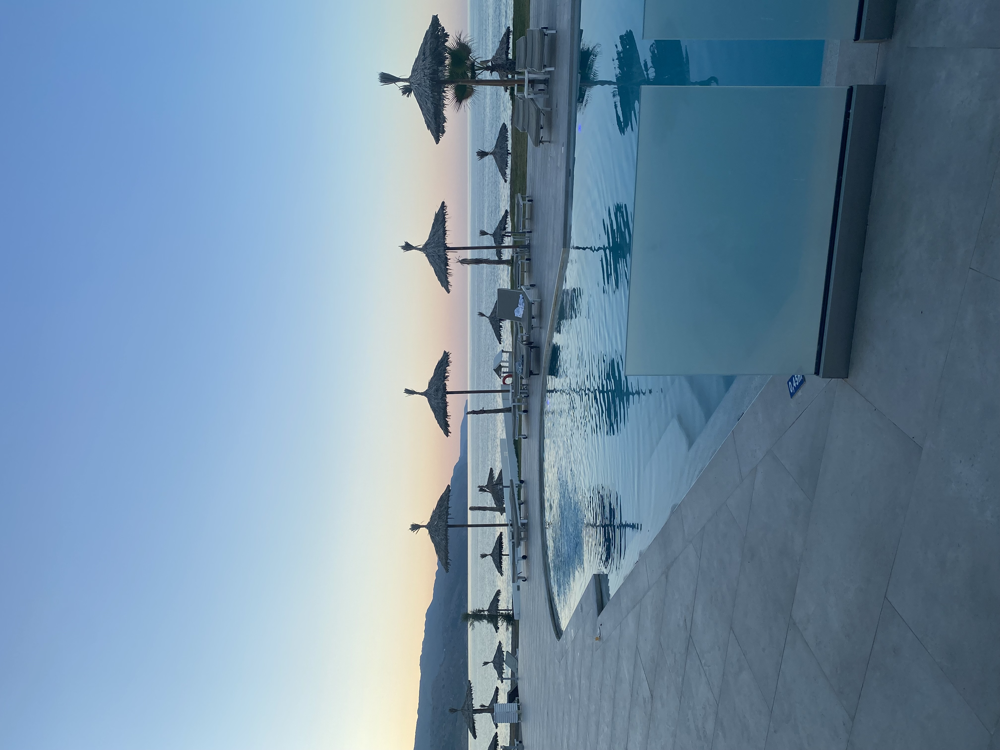
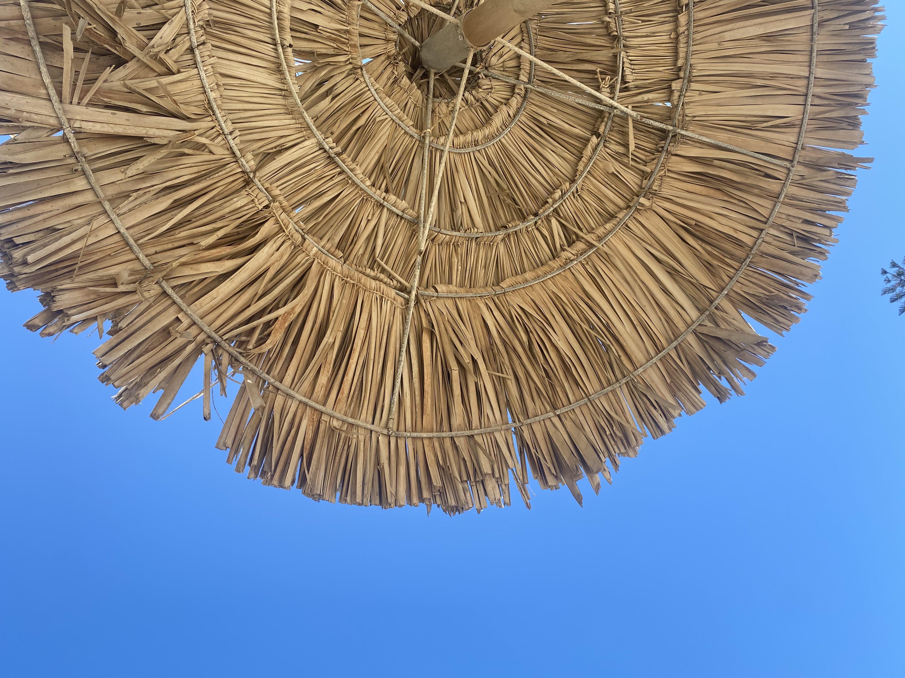
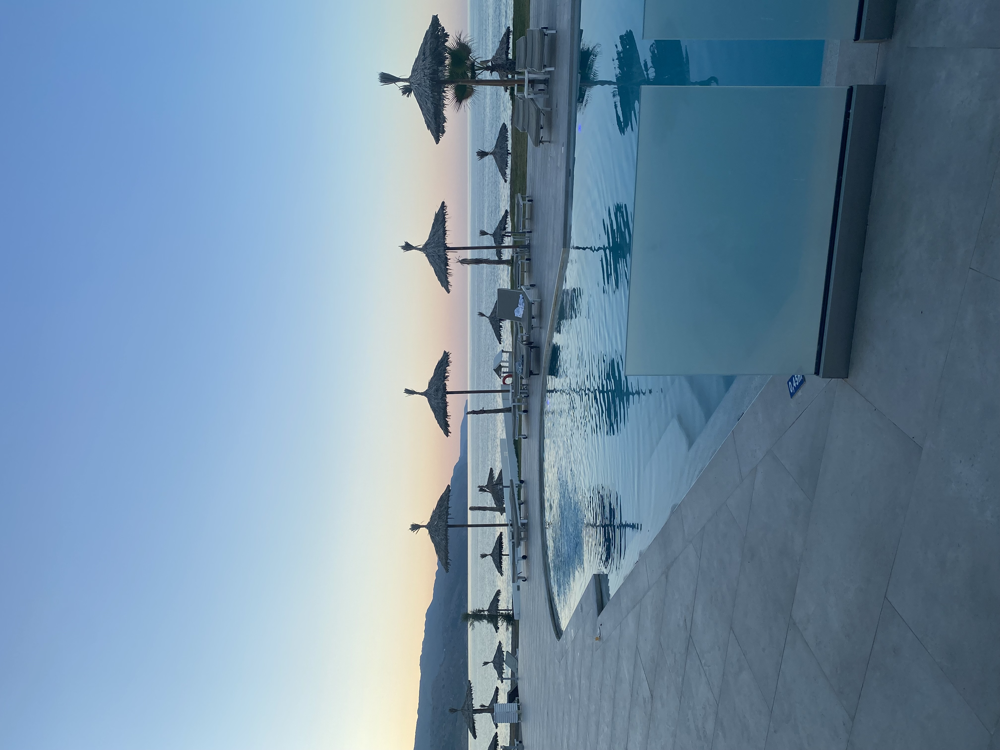
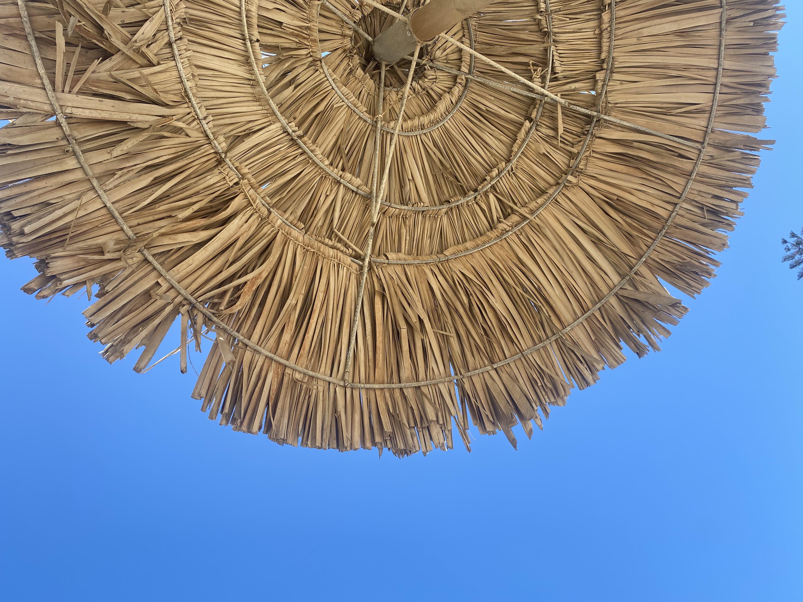
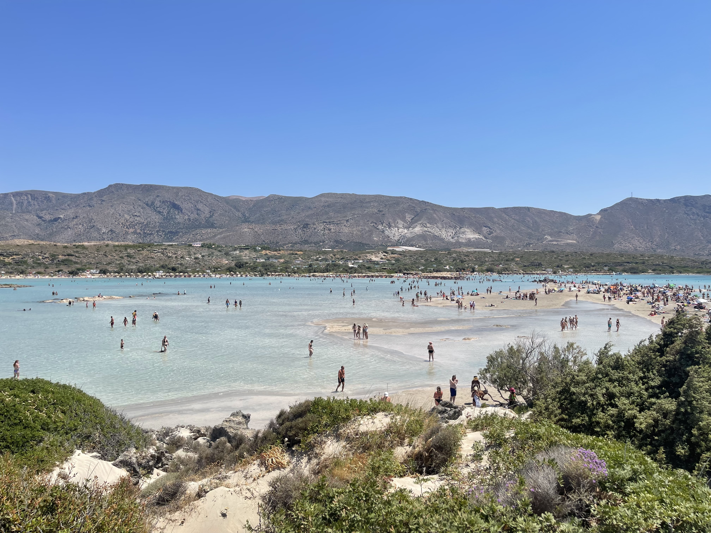
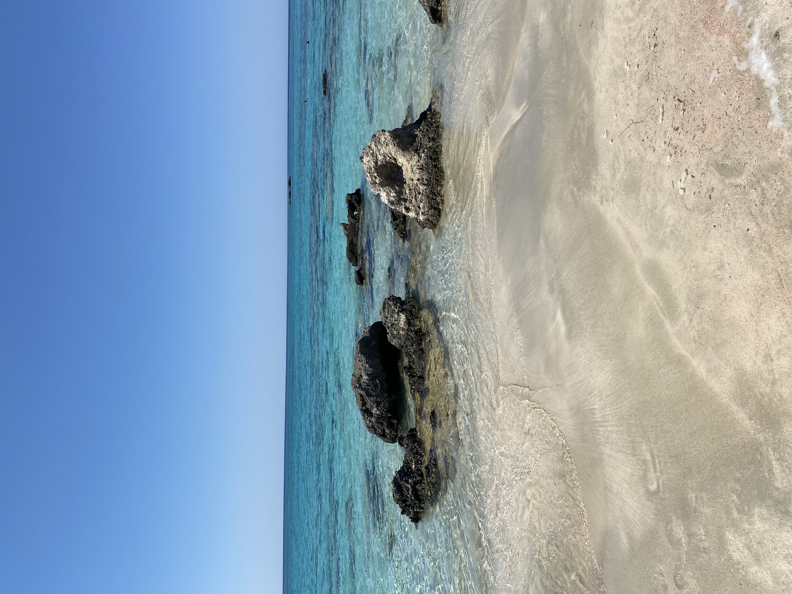

| Miejsce | Opis | Położenie | Odwiedzone? |
|---|---|---|---|
| Laguna Balos | Jedna ze sztandarowych plaż Krety jeśli nie całej Grecji. Nawet najmniej udane zdjęcie ukazujące krajobraz tego miejsca musi robić i w większości wypadków robi naprawdę duże wrażenie. Brak wygodnej asfaltowej drogi sprawia, że poza godzinami kiedy dopływają tu wycieczkowe statki, plaża ta jest odwiedzana przez niezbyt dużą liczbę turystów. | Kreta | Nie |
| Chania | Miasto zostało założone przez Wenecjan na miejscu starożytnego, istniejącego tu już ok. 3400 p.n.e., minojskiego osiedla Kydonia. Obecnie Chania słynie z atrakcyjnej nabrzeżnej dzielnicy portowej i charakterystycznej zabudowy z czasów weneckich. | Tak | |
| Wąwóz Samaria | Wąwóz Samaria, jeden z najbardziej zapierających dech w piersiach i najdłuższych szlaków turystycznych w Europie. Często określany jako kraina wąwozów, naturalny krajobraz Krety jest usiany ponad 400 kanionami i jest domem dla największej liczby wąwozów w Grecji, a Wąwóz Samaria jest ich klejnotem koronnym. | Nie | |
| Laguna Elafonisi | Niewielka wyspa położona tuż przy południowo-zachodnim brzegu Krety. Na Elafonisi znajduje się plaża z charakterystycznym różowym piaskiem. Z różowym kolorem piasku na wyspie wiąże się legenda, według której w Wielką Sobotę 24 kwietnia 1824 roku oddziały tureckie pod wodzą Ibrahima brutalnie wymordowały szukających tu schronienia 600 kobiet i dzieci – plaża spłynęła krwią i od tego czasu niegdyś zwykły piasek ma kolor różowy. | Tak | |
| Ogród Botaniczny | Liczy 20 hektarów ziemi porośniętej przez drzewa owocowe z całego świata,zioła, rośliny lecznicze i ozdobne. Tworzą one swoisty mikroklimat, w którym warto spędzić 1-2 relaksujące godziny. Oprócz lokalnych popularnych roślin znajdziecie tu także unikatowe próbki kreteńskiej flory i fauny oraz tropikalnych i subtropikalnych gatunków z całego świata. | Tak | |
| Pałac minojski w Knossos | To jedno z najważniejszych stanowisk archeologicznych na świecie. Jest również jednym z najbardziej atrakcyjnych do odwiedzenia, dzięki żywej i kolorowej renowacji, która ożywia starożytny świat. | Nie |
Docelowe miejsce - Kreta
W wakacje 07.2022 wybraliśmy się razem z narzeczonym na wakacje do Grecji, a dokładniej na Kretę. Dlaczego akurat takie miejsce? Głównie ze względu na to, że ta wyspa ma dogodne możliwości przepłyniecia z niej na wyspę Santorini! Jednak najpierw o samej Krecie.
Kreta - co warto odwiedzić.
Nie wybraliśmy Krety tylko ze względu na samo Santorini. Wyspa oferuje wiele niesamowitych miejsc
które warto odwiedzić. Nam udało się zobaczyć tylko niektóre z nich, bo na wakacjach cenimy sobie
także wylegiwanie na słoneczku. Ciekawymi miejscami wartymi odwiedzenia są np. Laguna Balos,
miasto Chania, wąwóz Samaria czy laguna Elafonisi.
Oprócz tego mniej popularnym
miejscem odwiedzin jest ogród botaniczny Botanical Park&Garden of Crete, który warto
odwiedzić, ze względu na przepiękny taras widokowy, na który się wchodzi po zwiedzeniu ogrodu. Na
tarasie znajduje się restauracja, która oferuje dania przyrządzane z dodatkiem owoców z własnego
ogrodu!

